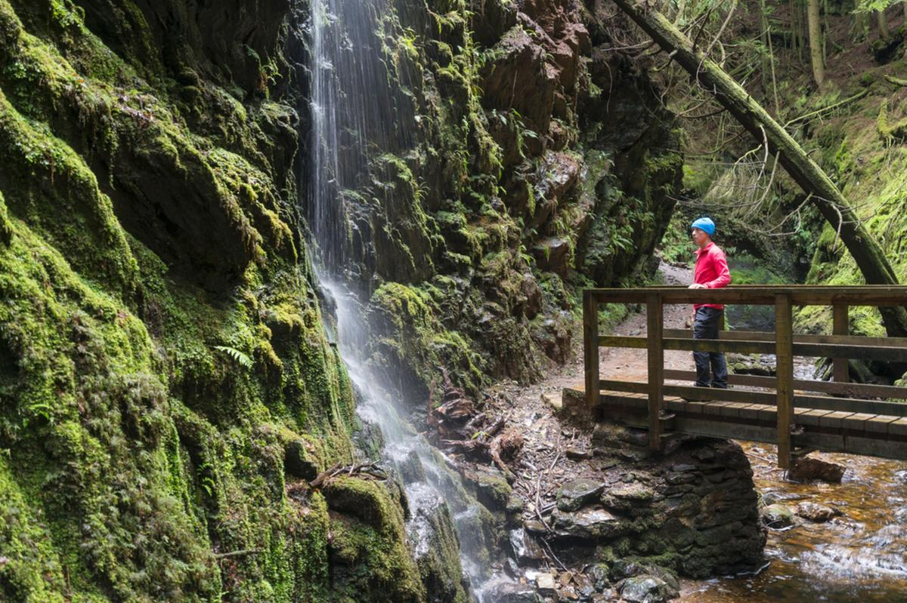
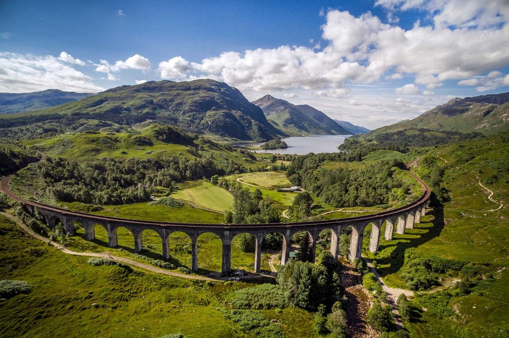

The Cowal Peninsula is 3.5 hours by car from Edinburgh You can walk or visit the Dunans Castle, a very beautiful castle
Glenfinnan Viaduct Trail

Maybe you're planning to stop there to take a photo of the majestic viaduct, or to appease the kids by taking them to see this icon from the Harry Potter films.
Ben Nevis
Ben Nevis rises 1345 meters above the small town of Fort William, in the historic district of Lochaber. Every year, thousands of people take the main route to its summit. The climb is often described as slow but steady.